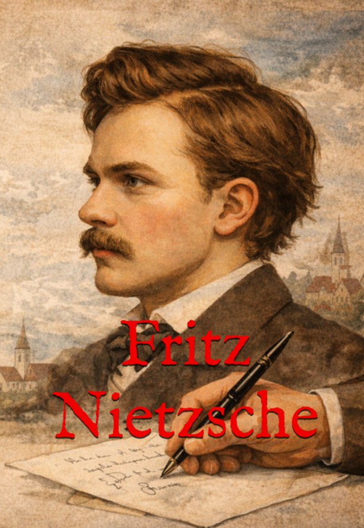

Cartas da juventude (1850–1866)
Friedrich Wilhelm Nietzsche
Reunião das correspondências iniciais de Nietzsche, com tradução, organização e comentários de Diego Vinícius Brito dos Santos, em uma edição voltada à formação intelectual do filósofo e ao estudo de sua juventude.

Sobre o autor
Friedrich Wilhelm Nietzsche foi filósofo, filólogo e escritor alemão, reconhecido como um dos pensadores mais influentes da modernidade. Sua obra marcou profundamente a filosofia, a crítica cultural e a história das ideias.

Sobre o tradutor
Diego Vinícius Brito dos Santos realiza a tradução, organização e contextualização das correspondências de juventude de Nietzsche, aproximando o público de língua portuguesa de documentos fundamentais para compreender a formação intelectual do filósofo.